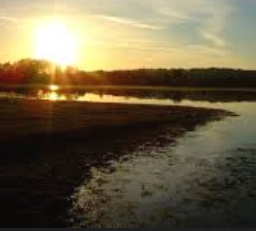
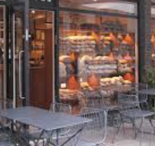
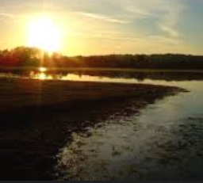
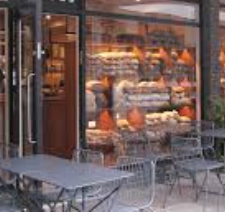

1. The Radcliffe Camera
The Radcliffe Camera is an iconic circular library building in Oxford, known for its stunning architecture and historical significance.
Oxford is a historic city known for its prestigious university and rich cultural heritage.
However there is much more to explore beyond the university grounds.
From beautiful architecture to vibrant cultural events, Oxford offers something for everyone.
This site will guide you through the best experiences Oxford has to offer which includes:
 



If you do want to delve even deeper into the Oxford lore and history check out the Wiki.
The Radcliffe Camera is an iconic circular library building in Oxford, known for its stunning architecture and historical significance.
The Bodleian Library is one of the oldest libraries in Europe, housing millions of books and manuscripts, and offering guided tours to visitors.
The Ashmolean Museum is the University of Oxford's museum of art and archaeology, showcasing a vast collection of artifacts from around the world.
Oxford Kebab House is a popular spot for delicious and affordable kebabs, make sure to try their signature lamb doner FRIED UP!
The Eagle and Child is a historic pub known for its literary connections, offering a cozy atmosphere and traditional British fare.
Gail's Bakery is a charming bakery and café that serves freshly baked pastries, bread, and excellent coffee.
Punting is a quintessential Oxford activity. Rent a punt and glide along the River Cherwell while enjoying the scenic views of the university buildings and gardens.
JS Sports Bar is a lively spot to catch a game, enjoy pool, and socialize with locals and visitors alike.
Port Meadow is a beautiful green space perfect for a leisurely stroll or a picnic. Enjoy views of port meadow and the surrounding nature.